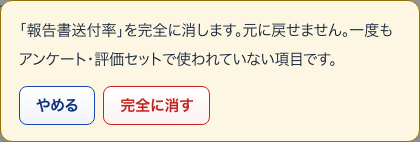
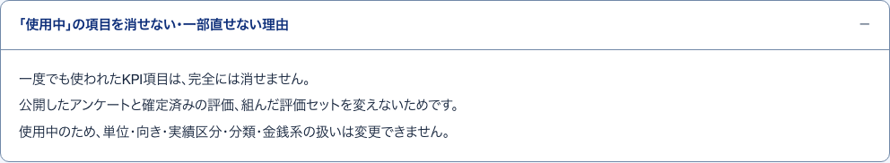
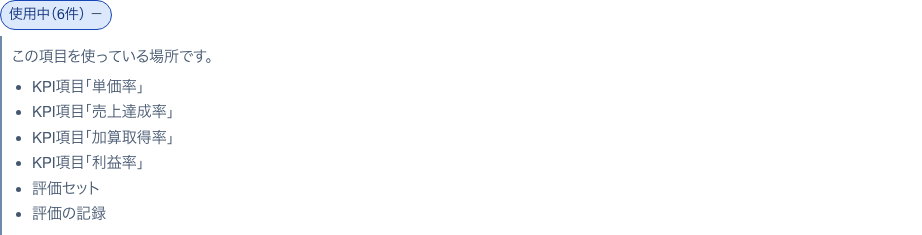
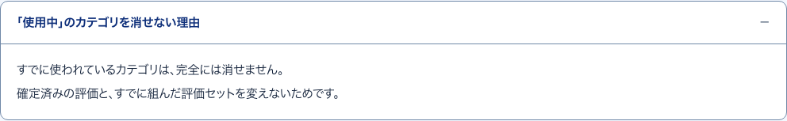
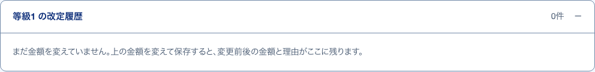

15完全に消す確かめる小窓
S21 KPI項目 ・ 押すもの: 「完全に消す」 ・ 閉じる: やめる

中に出るもの
- 「（項目名）」を完全に消します。元に戻せません。
- 一度もアンケート・評価セットで使われていない項目です。
中で押せるもの
- 完全に消す: 項目を消す
- やめる: 小窓を閉じる。何も変わらない
16新しい項目の編集欄開いて見る
S21 KPI項目 ・ 押すもの: 「KPI項目を追加」 ・ 閉じる: やめる
中に出るもの
- 項目名・単位・向き・実績区分・分類・金銭系の項目
- 実績の聞き方と計算式
- 計算式の補足・備考
中で押せるもの
- 追加する: 新しい項目を一覧に足して閉じる
- やめる: 何も足さずに閉じる
17消せない・一部直せない理由開いて見る
S21 KPI項目 ・ 押すもの: 「「使用中」の項目を消せない・一部直せない理由」

中に出るもの
- 一度でも使われたKPI項目は完全には消せない
- 公開したアンケートと確定済みの評価、組んだ評価セットを変えないため
- 使用中のため単位・向き・実績区分・分類・金銭系の扱いは変えられない
18使用中（n件）開いて見る
S22 KPIカテゴリ ・ 押すもの: 「使用中」

中に出るもの
- この項目を使っている場所です。
- そのカテゴリを使っているKPI項目の名前
19完全に消す確かめる小窓
S22 KPIカテゴリ ・ 押すもの: 「完全に消す」 ・ 閉じる: やめる
中に出るもの
- 「（カテゴリ名）」を完全に消します。元に戻せません。
- どのKPI項目でも一度も使われていないカテゴリです。
中で押せるもの
- 完全に消す: カテゴリを消す
- やめる: 小窓を閉じる。何も変わらない
20カテゴリの名前開いて見る
S22 KPIカテゴリ ・ 押すもの: 「カテゴリを追加」 ・ 閉じる: やめる
中に出るもの
- カテゴリの名前（例：品質）
中で押せるもの
- 追加する: カテゴリを一覧に足す
- やめる: 何も足さずに閉じる
21カテゴリを消せない理由開いて見る
S22 KPIカテゴリ ・ 押すもの: 「「使用中」のカテゴリを消せない理由」

中に出るもの
- すでに使われているカテゴリは完全には消せない
- 確定済みの評価と、すでに組んだ評価セットを変えないため
22改定履歴開いて見る
S23 昇給の設定 ・ 押すもの: 「の改定履歴」

中に出るもの
- 変えた日
- 月額（変更前 → 変更後）
- 適用開始
- 変更した人
- 理由
- 記録が無いときは、まだ金額を変えていない旨